Yaay the projector works
You may need to zoom out a little if the text is too bigModules Everywhere
mikemaccana.com@mikemaccana
I'll tweet a link out to the slides after the talk.
@mikemaccana
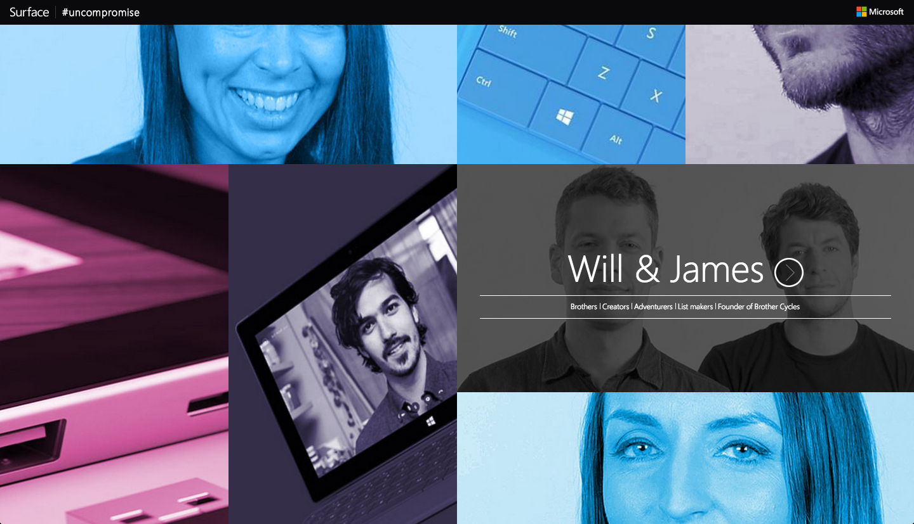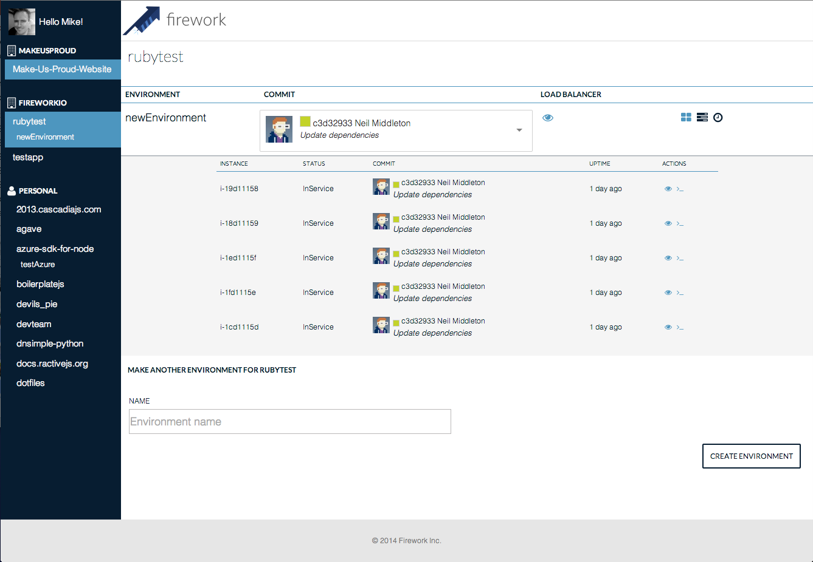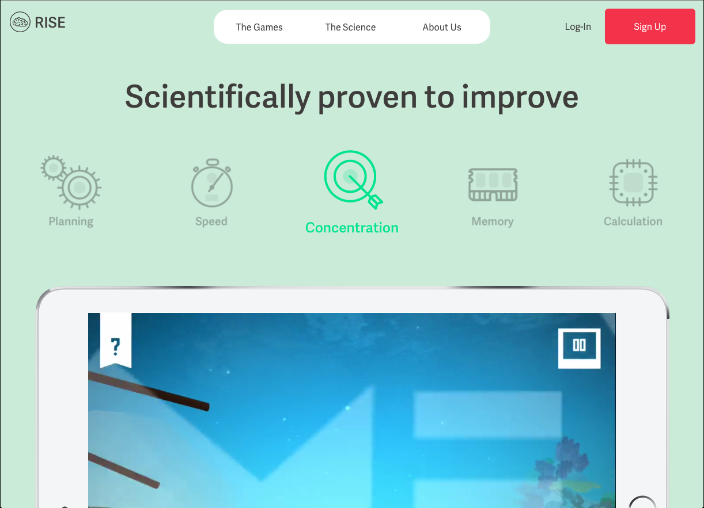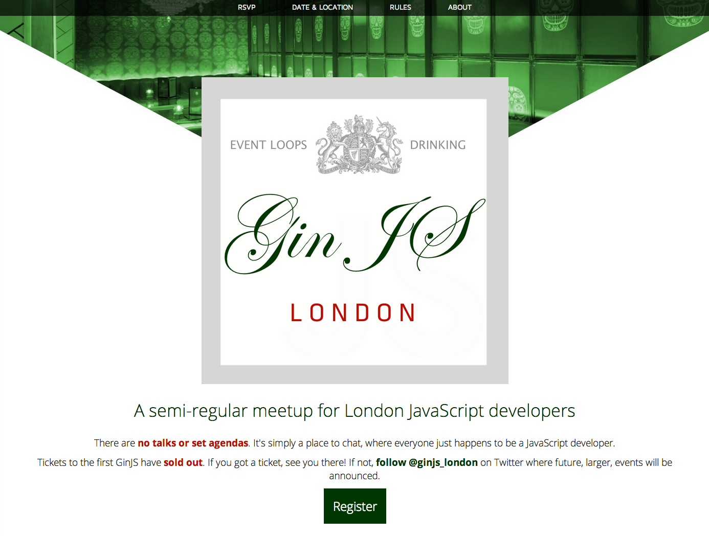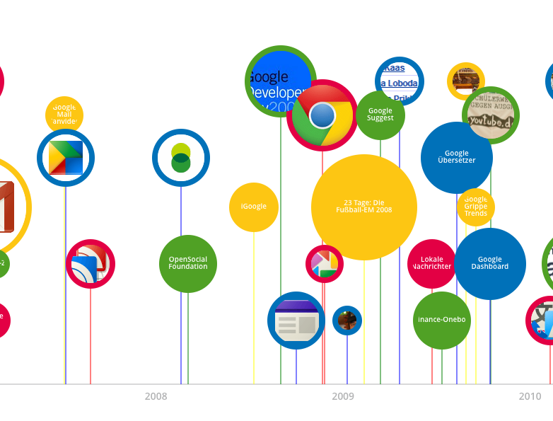
Built stuff for Google, Microsoft,
and a whole bunch of startups.
CertSimple
Fast painless EV SSL
certsimple.com
How CertSimple is built
- We use npm on the backend
- We use npm on the frontend
- All our code lives in npm modules
Why we chose npm
How you can use npm
Things to be aware of
npm is where the packages are
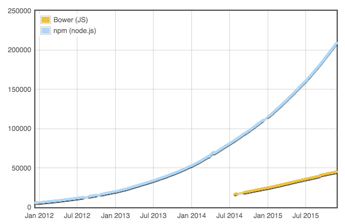JSPM: 451 modulesEvery frontend package CertSimple needed was officially maintained on npm
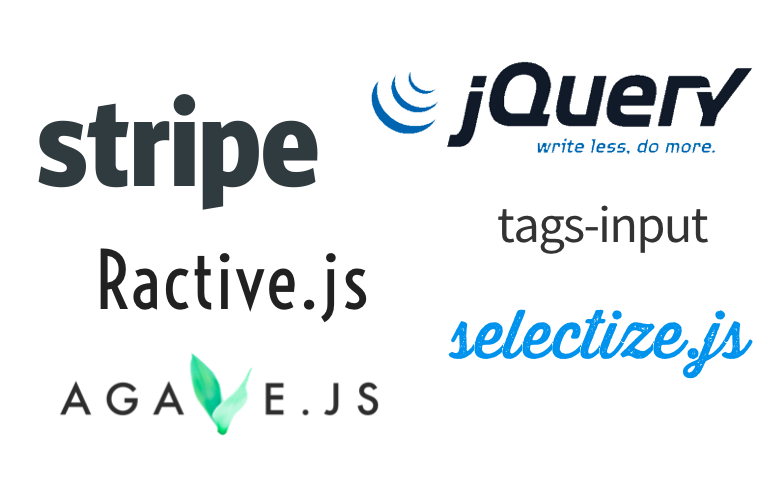Things we didn't yet know we needed were there too
- country-data
- superagent
- sorts
frontend attitude to npm
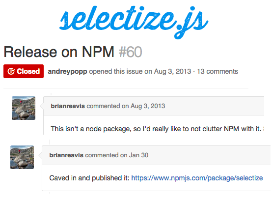Other module formats?
- window globals are dead
- RequireJS never had a module repository - dead
- UMD only exists because of globals and Require
- Very few ES6 packages, and they’ll be on npm anyway
USE REAL PROJECTS, NOT STACKOVERFLOW
modules everywhere
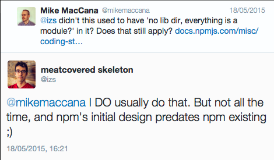Why just modules?
- Simple imports
- Modules make great containers
- Consistency
- Easier to open source
Building, & bundling npm modules
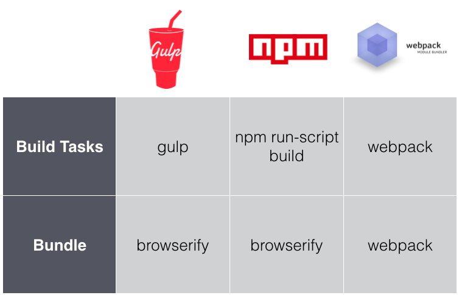GULP AND BROWSERIFY
Basic browserify
js/src/index.js
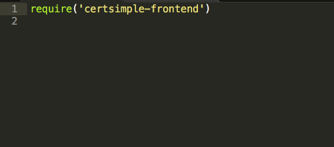Imports a module
js/dist/index.js
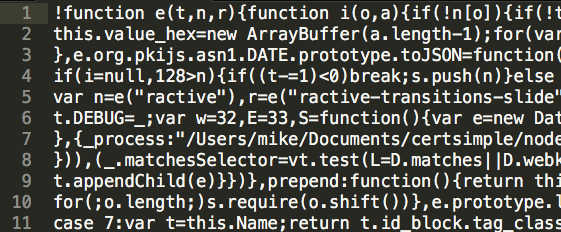That module, and all it's dependencies
What about templates? And styles?
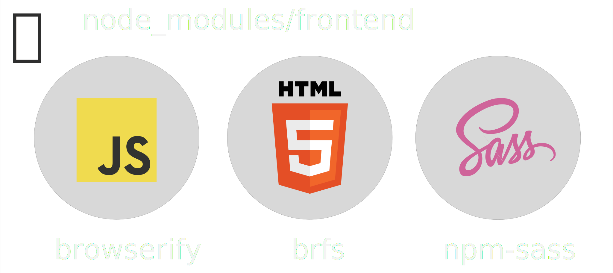Things to know about
🔥
Analysing bundle size
discify
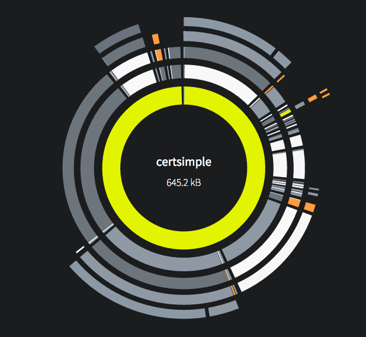Your modules are more interesting than other people's
Create a Sublime .project file that prioritises private npm modules
Deploying
package.json only specifies versions for your immediate dependencies
- a version 1.0.0 - only use b version 1.2.0
- b version 1.2.0 - use version c 1.0.0 or newer
- c - could be any version newer than 1.0.0
npm shrinkwrap
Provides consistent deploys
Specifies the full tree, all the way down
Built into npm
npm dedupe
Moves modules to the top so they can be shared
In NPM v3
What do we get
Modularity!
All aspects of the components - JS, HTML, styling - inside module
Know where to look
Currently used in production on CertSimple
Questions?
Tomorrow
ginjs.org
£40 off an EV cert at CertSimple
SORRY YOU MISSED OUT